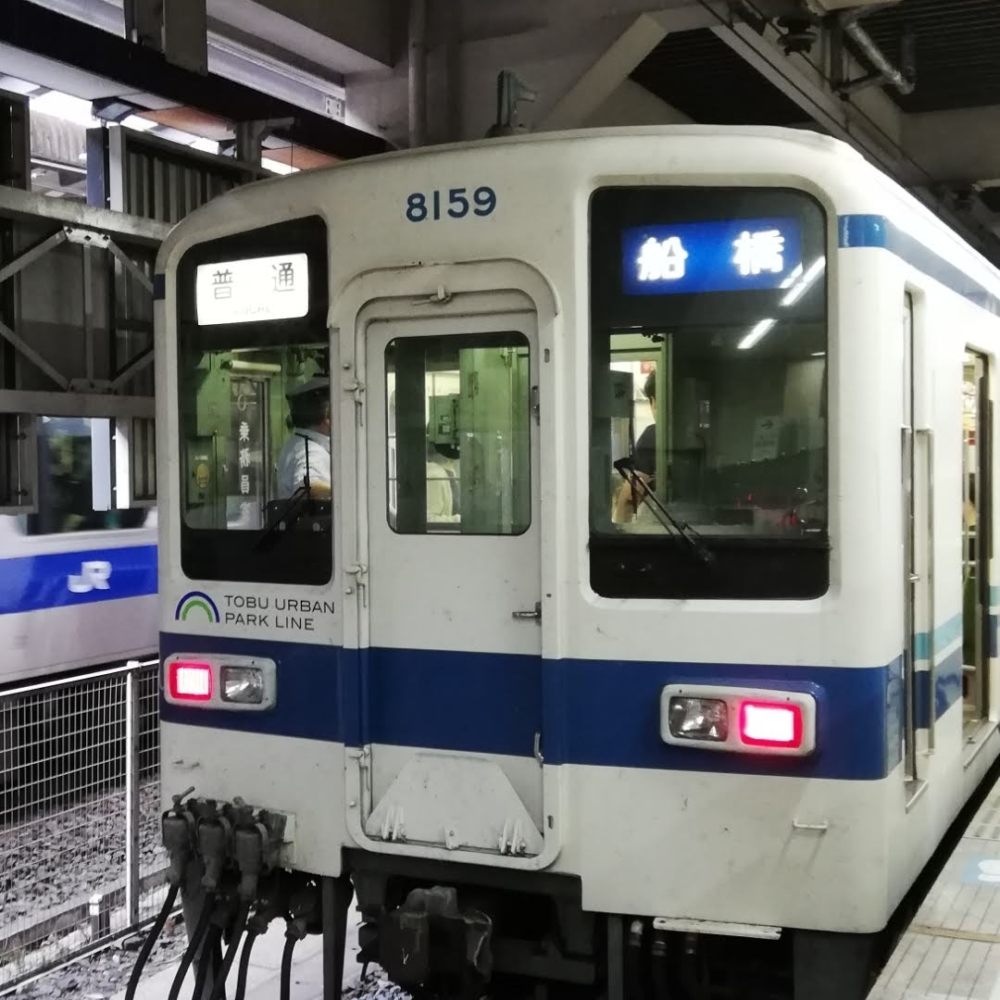

東武8000型

管理人撮影
私鉄の103系と呼ばれている東武8000型です。
東武アーバンパークライン（野田線）をメインに走行しています。
車両は6両20m級車体です。
(2023年4月から5両編成になる可能性があります。)
提供画像一覧
提供者:管理人

提供者:紫音様
管理人撮影
私鉄の103系と呼ばれている東武8000型です。
東武アーバンパークライン（野田線）をメインに走行しています。
車両は6両20m級車体です。
(2023年4月から5両編成になる可能性があります。)
提供者:管理人
提供者:紫音様